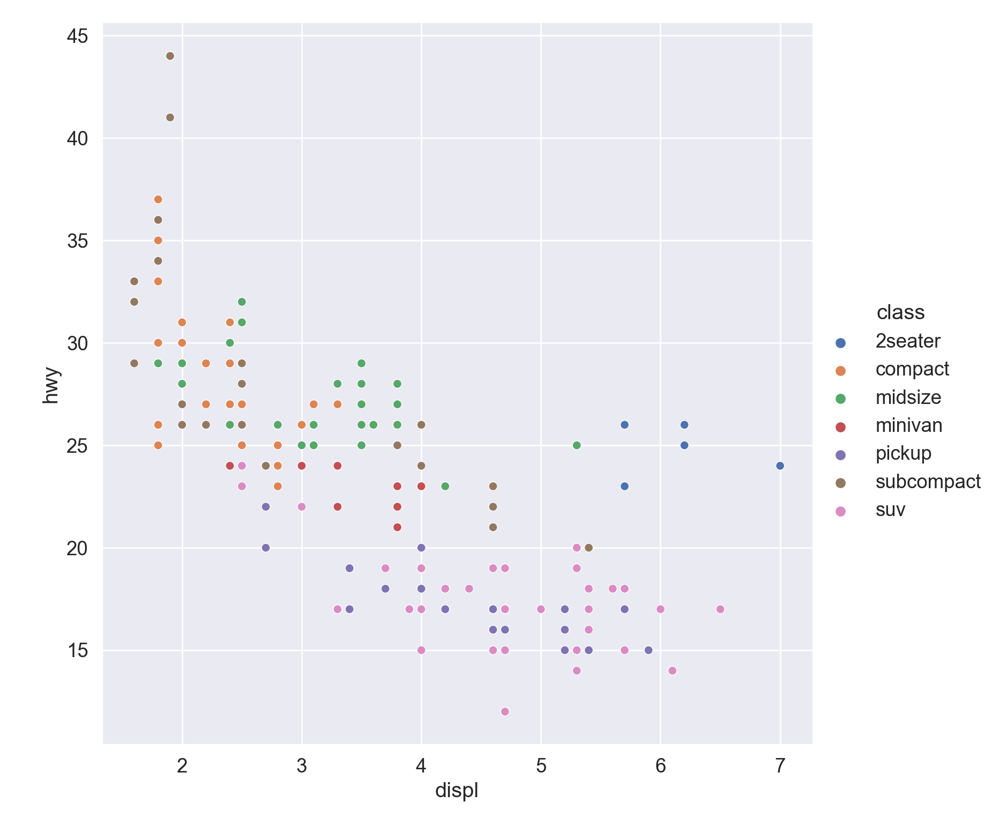
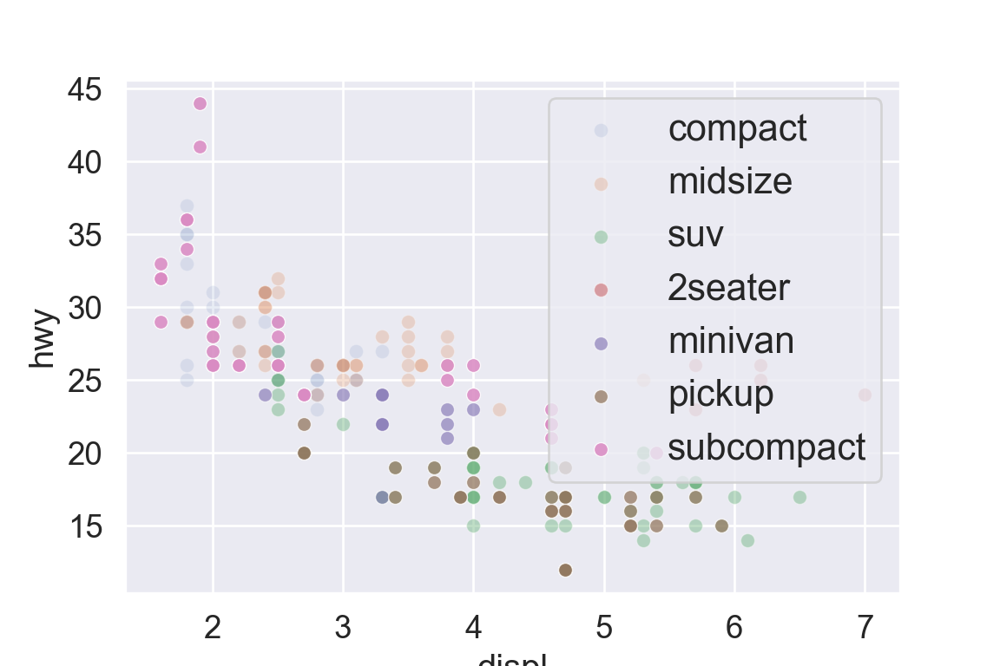
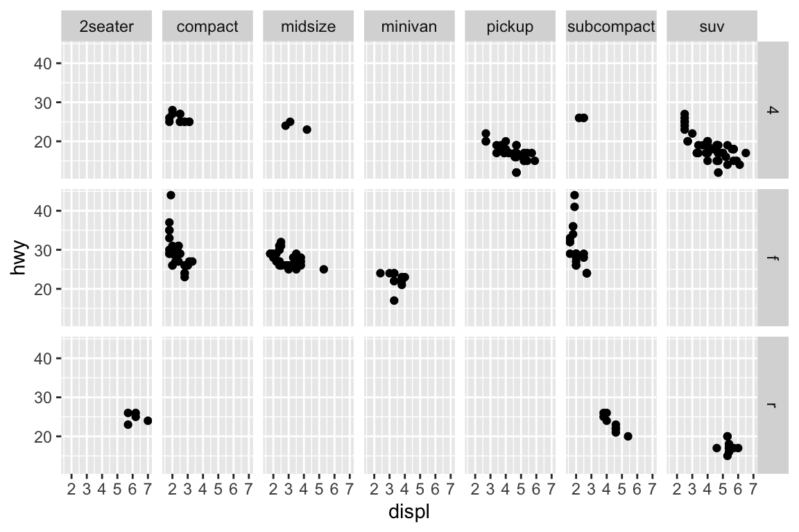
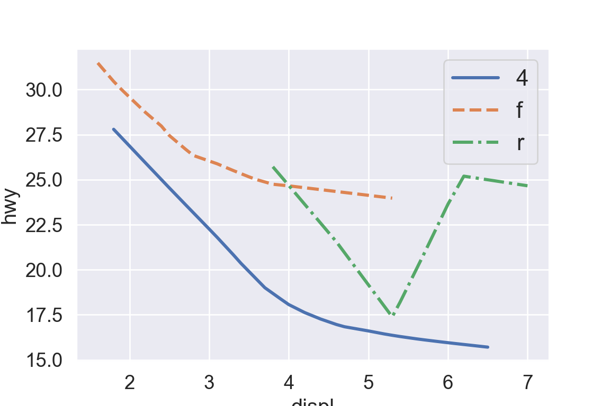
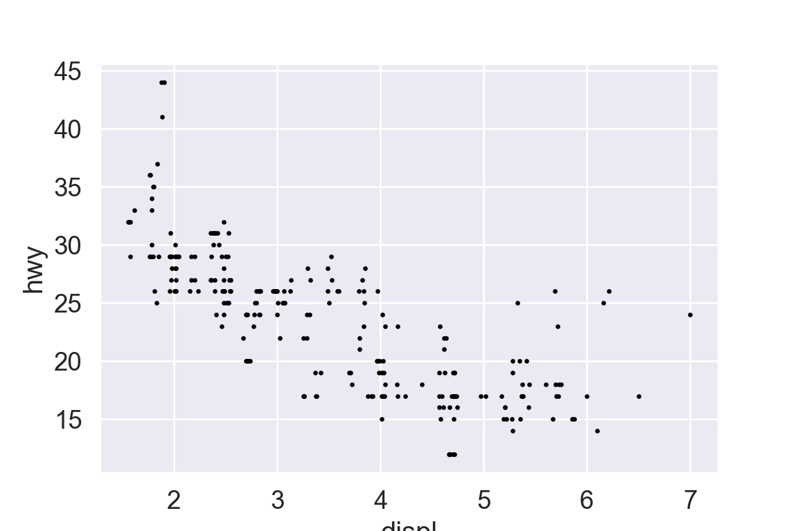
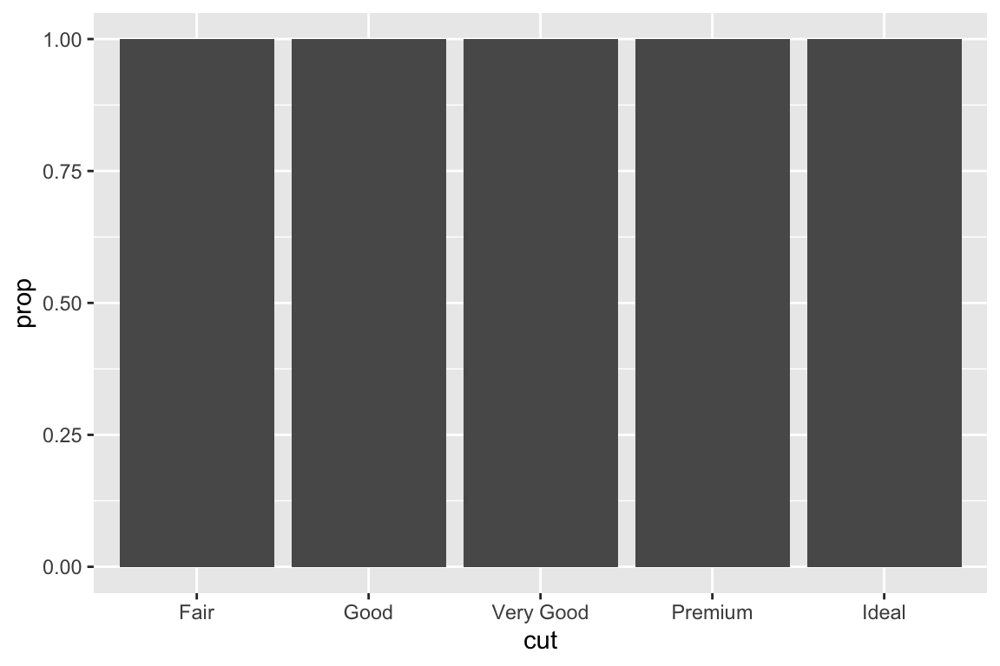
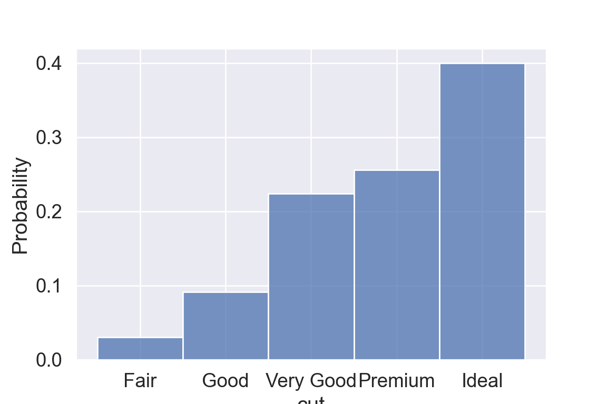
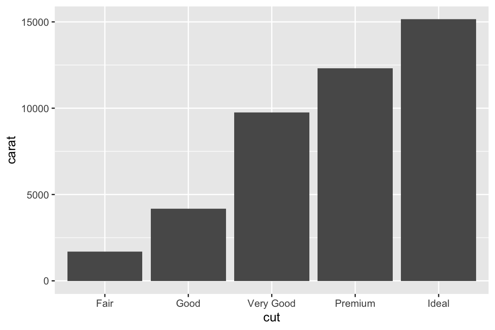
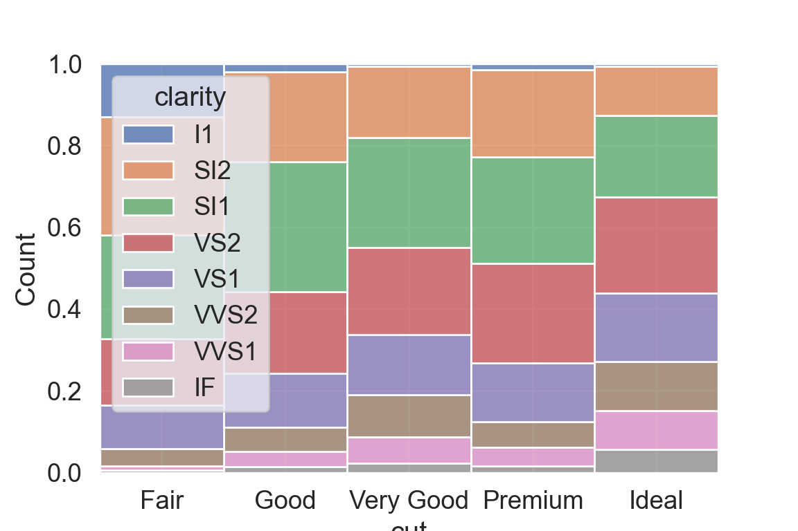
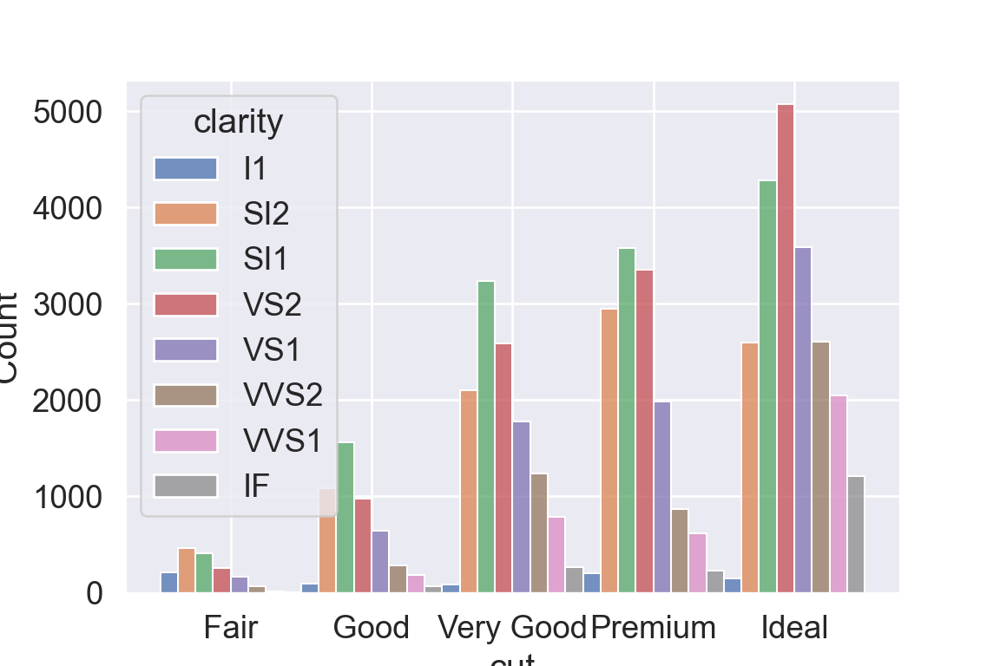

library(tidyverse)Data Visualization With ggplot2
Biostat 203B
A typical data science project:

1 Data visualization
“The simple graph has brought more information to the data analyst’s mind than any other device.”
John Tukey
2 Load tidyverse
3 mpg data
mpgdata is available from theggplot2package:
mpg %>% print(width = Inf)# A tibble: 234 × 11
manufacturer model displ year cyl trans drv cty hwy fl
<chr> <chr> <dbl> <int> <int> <chr> <chr> <int> <int> <chr>
1 audi a4 1.8 1999 4 auto(l5) f 18 29 p
2 audi a4 1.8 1999 4 manual(m5) f 21 29 p
3 audi a4 2 2008 4 manual(m6) f 20 31 p
4 audi a4 2 2008 4 auto(av) f 21 30 p
5 audi a4 2.8 1999 6 auto(l5) f 16 26 p
6 audi a4 2.8 1999 6 manual(m5) f 18 26 p
7 audi a4 3.1 2008 6 auto(av) f 18 27 p
8 audi a4 quattro 1.8 1999 4 manual(m5) 4 18 26 p
9 audi a4 quattro 1.8 1999 4 auto(l5) 4 16 25 p
10 audi a4 quattro 2 2008 4 manual(m6) 4 20 28 p
class
<chr>
1 compact
2 compact
3 compact
4 compact
5 compact
6 compact
7 compact
8 compact
9 compact
10 compact
# … with 224 more rowsTibbles are a generalized form of data frames, which are extensively used in tidyverse.
displ: engine size, in liters.
hwy: highway fuel efficiency, in mile per gallon (mpg).
4 Aesthetic mappings | r4ds chapter 3.3
4.1 Scatter plot
hwyvsdispl
ggplot(data = mpg) +
geom_point(mapping = aes(x = displ, y = hwy))
An aesthetic maps data to a specific feature of plot.
Check available aesthetics for a geometric object by
?geom_point.
4.2 Color of points
- Color points according to
class:
ggplot(data = mpg) +
geom_point(mapping = aes(x = displ, y = hwy, color = class))
4.3 Size of points
- Assign different sizes to points according to
class:
ggplot(data = mpg) +
geom_point(mapping = aes(x = displ, y = hwy, size = class))4.4 Transparency of points
- Assign different transparency levels to points according to
class:
ggplot(data = mpg) +
geom_point(mapping = aes(x = displ, y = hwy, alpha = class))Warning: Using alpha for a discrete variable is not advised.4.5 Shape of points
- Assign different shapes to points according to
class:
ggplot(data = mpg) +
geom_point(mapping = aes(x = displ, y = hwy, shape = class))
- Maximum of 6 shapes at a time. By default, additional groups will go unplotted.
4.6 Manual setting of an aesthetic
- Set the color of all points to be blue:
ggplot(data = mpg) +
geom_point(mapping = aes(x = displ, y = hwy), color = "blue")
5 Facets | r4ds chapter 3.5
5.1 Facets
Facets divide a plot into subplots based on the values of one or more discrete variables.
A subplot for each car type:
ggplot(data = mpg) +
geom_point(mapping = aes(x = displ, y = hwy)) +
facet_wrap(~ class, nrow = 2)- A subplot for each car type and drive:
ggplot(data = mpg) +
geom_point(mapping = aes(x = displ, y = hwy)) +
facet_grid(drv ~ class)
6 Geometric objects | r4ds chapter 3.6
6.1 geom_smooth(): smooth line
hwyvsdisplline:
ggplot(data = mpg) +
geom_smooth(mapping = aes(x = displ, y = hwy))
6.2 Different line types
- Different line types according to
drv:
ggplot(data = mpg) +
geom_smooth(mapping = aes(x = displ, y = hwy, linetype = drv))
6.3 Different line colors
- Different line colors according to
drv:
ggplot(data = mpg) +
geom_smooth(mapping = aes(x = displ, y = hwy, color = drv))6.4 Points and lines
- Lines overlaid over scatter plot:
ggplot(data = mpg) +
geom_point(mapping = aes(x = displ, y = hwy)) +
geom_smooth(mapping = aes(x = displ, y = hwy))
- Same as
ggplot(data = mpg, mapping = aes(x = displ, y = hwy)) +
geom_point() + geom_smooth()
6.5 Aesthetics for each geometric object
- Different aesthetics in different layers:
ggplot(data = mpg, mapping = aes(x = displ, y = hwy)) +
geom_point(mapping = aes(color = class)) +
geom_smooth(data = filter(mpg, class == "subcompact"), se = FALSE)
7 Bar plots | r4ds chapter 3.7
7.1 diamonds data
diamondsdata:
diamonds# A tibble: 53,940 × 10
carat cut color clarity depth table price x y z
<dbl> <ord> <ord> <ord> <dbl> <dbl> <int> <dbl> <dbl> <dbl>
1 0.23 Ideal E SI2 61.5 55 326 3.95 3.98 2.43
2 0.21 Premium E SI1 59.8 61 326 3.89 3.84 2.31
3 0.23 Good E VS1 56.9 65 327 4.05 4.07 2.31
4 0.29 Premium I VS2 62.4 58 334 4.2 4.23 2.63
5 0.31 Good J SI2 63.3 58 335 4.34 4.35 2.75
6 0.24 Very Good J VVS2 62.8 57 336 3.94 3.96 2.48
7 0.24 Very Good I VVS1 62.3 57 336 3.95 3.98 2.47
8 0.26 Very Good H SI1 61.9 55 337 4.07 4.11 2.53
9 0.22 Fair E VS2 65.1 61 337 3.87 3.78 2.49
10 0.23 Very Good H VS1 59.4 61 338 4 4.05 2.39
# … with 53,930 more rows7.2 Bar plot
geom_bar()creates bar chart:
ggplot(data = diamonds) +
geom_bar(mapping = aes(x = cut))
Bar charts, like histograms, frequency polygons, smoothers, and boxplots, plot some computed variables instead of raw data.
Check available computed variables for a geometric object via help:
?geom_bar- Use
stat_count()directly:
ggplot(data = diamonds) +
stat_count(mapping = aes(x = cut))
stat_count()has a default geomgeom_bar().
- Display frequency instead of counts:
ggplot(data = diamonds) +
geom_bar(mapping = aes(x = cut, y = ..prop.., group = 1)) Warning: The dot-dot notation (`..prop..`) was deprecated in ggplot2 3.4.0.
ℹ Please use `after_stat(prop)` instead.
Note the aesthetics mapping group=1 overwrites the default grouping (by cut) by considering all observations as a group. Without this we get
ggplot(data = diamonds) +
geom_bar(mapping = aes(x = cut, y = ..prop..)) - Color bar:
ggplot(data = diamonds) +
geom_bar(mapping = aes(x = cut, colour = cut))
- Fill color:
ggplot(data = diamonds) +
geom_bar(mapping = aes(x = cut, fill = cut))
- Fill color according to another variable:
ggplot(data = diamonds) +
geom_bar(mapping = aes(x = cut, fill = clarity))
7.3 geom_bar() vs geom_col()
geom_bar()makes the height of the bar proportional to the number of cases in each group (or if the weight aesthetic is supplied, the sum of the weights).
ggplot(data = diamonds) +
geom_bar(mapping = aes(x = cut))
The height of bar is the number of diamonds in each cut category.
geom_col()makes the heights of the bars to represent values in the data.
ggplot(data = diamonds) +
geom_col(mapping = aes(x = cut, y = carat))
The height of bar is total carat in each cut category.
8 Positional arguments | r4ds chapter 3.8
position = "jitter"adds random noise to X and Y position of each element to avoid overplotting:
ggplot(data = mpg) +
geom_point(mapping = aes(x = displ, y = hwy), position = "jitter")
geom_jitter()is similar:
ggplot(data = mpg) +
geom_jitter(mapping = aes(x = displ, y = hwy))
position_fill()stack elements on top of one another, normalize height:
ggplot(data = diamonds) +
geom_bar(mapping = aes(x = cut, fill = clarity), position = "fill")
position_dodge()arrange elements side by side:
ggplot(data = diamonds) +
geom_bar(mapping = aes(x = cut, fill = clarity), position = "dodge")position_stack()stack elements on top of each other:
ggplot(data = diamonds) +
geom_bar(mapping = aes(x = cut, fill = clarity), position = "stack")
9 Coordinate systems | r4ds chapter 3.9
- Recall the mpg data:
mpg# A tibble: 234 × 11
manufacturer model displ year cyl trans drv cty hwy fl class
<chr> <chr> <dbl> <int> <int> <chr> <chr> <int> <int> <chr> <chr>
1 audi a4 1.8 1999 4 auto… f 18 29 p comp…
2 audi a4 1.8 1999 4 manu… f 21 29 p comp…
3 audi a4 2 2008 4 manu… f 20 31 p comp…
4 audi a4 2 2008 4 auto… f 21 30 p comp…
5 audi a4 2.8 1999 6 auto… f 16 26 p comp…
6 audi a4 2.8 1999 6 manu… f 18 26 p comp…
7 audi a4 3.1 2008 6 auto… f 18 27 p comp…
8 audi a4 quattro 1.8 1999 4 manu… 4 18 26 p comp…
9 audi a4 quattro 1.8 1999 4 auto… 4 16 25 p comp…
10 audi a4 quattro 2 2008 4 manu… 4 20 28 p comp…
# … with 224 more rows- Boxplots (grouped by class):
ggplot(data = mpg, mapping = aes(x = class, y = hwy)) +
geom_boxplot()
coord_cartesian()is the default cartesian coordinate system:
ggplot(data = mpg, mapping = aes(x = class, y = hwy)) +
geom_boxplot() +
coord_cartesian(xlim = c(0, 5))
coord_fixed()specifies aspect ratio (x / y):
ggplot(data = mpg, mapping = aes(x = class, y = hwy)) +
geom_boxplot() +
coord_fixed(ratio = 1/2)coord_flip()flips x- and y- axis:
ggplot(data = mpg, mapping = aes(x = class, y = hwy)) +
geom_boxplot() +
coord_flip()
- Pie chart:
ggplot(data = mpg, mapping = aes(x = factor(1), fill = class)) +
geom_bar(width = 1) +
coord_polar("y")
- A map:
library("maps")
nz <- map_data("nz")
head(nz, 20) long lat group order region subregion
1 172.7433 -34.44215 1 1 North.Island <NA>
2 172.7983 -34.45562 1 2 North.Island <NA>
3 172.8528 -34.44846 1 3 North.Island <NA>
4 172.8986 -34.41786 1 4 North.Island <NA>
5 172.9593 -34.42503 1 5 North.Island <NA>
6 173.0184 -34.39895 1 6 North.Island <NA>
7 173.0229 -34.44662 1 7 North.Island <NA>
8 173.0184 -34.49343 1 8 North.Island <NA>
9 172.9616 -34.50426 1 9 North.Island <NA>
10 172.9181 -34.47367 1 10 North.Island <NA>
11 172.9353 -34.52225 1 11 North.Island <NA>
12 172.8808 -34.51504 1 12 North.Island <NA>
13 172.9049 -34.55646 1 13 North.Island <NA>
14 172.9553 -34.53303 1 14 North.Island <NA>
15 172.9376 -34.57806 1 15 North.Island <NA>
16 172.9760 -34.61227 1 16 North.Island <NA>
17 172.9926 -34.56723 1 17 North.Island <NA>
18 173.0218 -34.61404 1 18 North.Island <NA>
19 173.0396 -34.65902 1 19 North.Island <NA>
20 173.0676 -34.70044 1 20 North.Island <NA>ggplot(nz, aes(x = long, y = lat, group = group)) +
geom_polygon(fill = "white", colour = "black")
coord_quickmap()puts maps in scale:
ggplot(nz, aes(long, lat, group = group)) +
geom_polygon(fill = "white", colour = "black") +
coord_quickmap()10 Graphics for communications | r4ds chapter 28
10.1 Title
- Figure title should be descriptive:
ggplot(mpg, aes(x = displ, y = hwy)) +
geom_point(aes(color = class)) +
geom_smooth(se = FALSE) +
labs(title = "Fuel efficiency generally decreases with engine size")10.2 Subtitle and caption
ggplot(mpg, aes(displ, hwy)) +
geom_point(aes(color = class)) +
geom_smooth(se = FALSE) +
labs(
title = "Fuel efficiency generally decreases with engine size",
subtitle = "Two seaters (sports cars) are an exception because of their light weight",
caption = "Data from fueleconomy.gov"
)10.3 Axis labels
ggplot(mpg, aes(displ, hwy)) +
geom_point(aes(colour = class)) +
geom_smooth(se = FALSE) +
labs(
x = "Engine displacement (L)",
y = "Highway fuel economy (mpg)"
)
10.4 Math equations
df <- tibble(x = runif(10), y = runif(10))
ggplot(df, aes(x, y)) + geom_point() +
labs(
x = quote(sum(x[i] ^ 2, i == 1, n)),
y = quote(alpha + beta + frac(delta, theta))
)
?plotmath
10.5 Annotations
- Find the most fuel efficient car in each car class:
best_in_class <- mpg %>%
group_by(class) %>%
filter(row_number(desc(hwy)) == 1)
best_in_class# A tibble: 7 × 11
# Groups: class [7]
manufacturer model displ year cyl trans drv cty hwy fl class
<chr> <chr> <dbl> <int> <int> <chr> <chr> <int> <int> <chr> <chr>
1 chevrolet corvette 5.7 1999 8 manu… r 16 26 p 2sea…
2 dodge caravan 2wd 2.4 1999 4 auto… f 18 24 r mini…
3 nissan altima 2.5 2008 4 manu… f 23 32 r mids…
4 subaru forester a… 2.5 2008 4 manu… 4 20 27 r suv
5 toyota toyota tac… 2.7 2008 4 manu… 4 17 22 r pick…
6 volkswagen jetta 1.9 1999 4 manu… f 33 44 d comp…
7 volkswagen new beetle 1.9 1999 4 manu… f 35 44 d subc…- Annotate points
ggplot(mpg, aes(x = displ, y = hwy)) +
geom_point(aes(colour = class)) +
geom_text(aes(label = model), data = best_in_class)
ggrepelpackage automatically adjust labels so that they don’t overlap:
library("ggrepel")
ggplot(mpg, aes(displ, hwy)) +
geom_point(aes(colour = class)) +
geom_point(size = 3, shape = 1, data = best_in_class) +
ggrepel::geom_label_repel(aes(label = model), data = best_in_class)
10.6 Scales
ggplot(mpg, aes(displ, hwy)) +
geom_point(aes(colour = class))automatically adds scales
ggplot(mpg, aes(displ, hwy)) +
geom_point(aes(colour = class)) +
scale_x_continuous() +
scale_y_continuous() +
scale_colour_discrete()
breaks
ggplot(mpg, aes(displ, hwy)) +
geom_point() +
scale_y_continuous(breaks = seq(15, 40, by = 5))
labels
ggplot(mpg, aes(displ, hwy)) +
geom_point() +
scale_x_continuous(labels = NULL) +
scale_y_continuous(labels = NULL)
- Plot y-axis at log scale:
ggplot(mpg, aes(x = displ, y = hwy)) +
geom_point() +
scale_y_log10()
- Plot x-axis in reverse order:
ggplot(mpg, aes(x = displ, y = hwy)) +
geom_point() +
scale_x_reverse()
10.7 Legends
- Set legend position:
"left","right","top","bottom",none:
ggplot(mpg, aes(displ, hwy)) +
geom_point(aes(colour = class)) +
theme(legend.position = "left")
See following link for more details on how to change title, labels, … of a legend.
10.8 Zooming
- Without clipping (calculate smoothing line using all data points)
ggplot(mpg, mapping = aes(displ, hwy)) +
geom_point(aes(color = class)) +
geom_smooth() +
coord_cartesian(xlim = c(5, 7), ylim = c(10, 30))
- With clipping (calculate smoothing line ignoring unseen data points)
ggplot(mpg, mapping = aes(displ, hwy)) +
geom_point(aes(color = class)) +
geom_smooth() +
xlim(5, 7) + ylim(10, 30)
ggplot(mpg, mapping = aes(displ, hwy)) +
geom_point(aes(color = class)) +
geom_smooth() +
scale_x_continuous(limits = c(5, 7)) +
scale_y_continuous(limits = c(10, 30))mpg %>%
filter(displ >= 5, displ <= 7, hwy >= 10, hwy <= 30) %>%
ggplot(aes(displ, hwy)) +
geom_point(aes(color = class)) +
geom_smooth()
10.9 Themes
ggplot(mpg, aes(displ, hwy)) +
geom_point(aes(color = class)) +
geom_smooth(se = FALSE) +
theme_bw()

Many options exist in the theme() function for specific customizations
ggplot(mpg, aes(displ, hwy)) +
geom_point(aes(color = class)) +
geom_smooth(se = FALSE) +
theme(legend.position = c(0.85, 0.85),
legend.key = element_blank(),
axis.text.x = element_text(angle = 0, size = 12),
axis.text.y = element_text(angle=0, size = 12),
axis.ticks = element_blank(),
legend.text=element_text(size = 8),
panel.grid.major = element_blank(),
panel.border = element_blank(),
panel.grid.minor = element_blank(),
panel.background = element_blank(),
axis.line = element_line(color = 'black', size = 0.3),
text = element_text(size = 13))Warning: The `size` argument of `element_line()` is deprecated as of ggplot2 3.4.0.
ℹ Please use the `linewidth` argument instead.
10.10 Manual Colors
You may want to manually enter colors instead of relying on default colors. There is a tool to pick optimally distinct colors that is useful.
Manually select colors to use
ggplot(filter(mpg, class == "suv" | class== "compact" |
class == "pickup" | class == "minivan"),
aes(displ, hwy)) +
geom_point(aes(color = class)) +
theme_bw() +
scale_color_manual(values = c("#24aad8",
"#cb6450",
"#80a14b",
"#aa65ba")) 
Manually assign labels to each color
ggplot(filter(mpg, class == "suv" | class== "compact" |
class == "pickup" | class == "minivan"),
aes(displ, hwy)) +
geom_point(aes(color = class)) +
theme_bw() +
scale_color_manual(values = c(suv = "#24aad8",
pickup = "#cb6450",
minivan = "#80a14b",
compact = "#aa65ba")) 
10.11 Saving plots
ggplot(mpg, aes(displ, hwy)) + geom_point()
ggsave("my-plot.pdf")11 Cheat sheet
RStudio cheat sheet is extremely helpful.